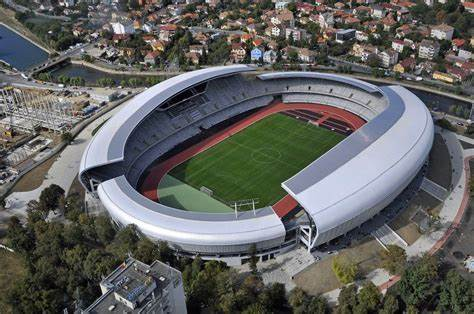

O scura descriere
Universitatea Cluj, fondată în 1919, este mai mult decât o echipă de fotbal—este un simbol al orașului Cluj-Napoca și al spiritului universitar. Cu o tradiție bogată și o comunitate de suporteri devotați, „Șepcile Roșii” se mândresc cu istoria lor și privesc cu ambiție spre viitor. Alături de noi, trăiește pasiunea fotbalului autentic și susține un club care reprezintă excelența și tradiția clujeană!
Mai multe aiciCasa noastra
Cluj Arena este stadionul pe care Universitatea Cluj își desfășoară meciurile de acasă. Inaugurat în octombrie 2011, Cluj Arena este unul dintre cele mai moderne și impunătoare stadioane din România. Cu o capacitate de aproximativ 30.000 de locuri, stadionul îndeplinește standardele UEFA pentru organizarea de competiții internaționale și găzduiește atât meciuri de fotbal, cât și evenimente culturale și concerte de mari dimensiuni.
Sponsori oficiali
Le mulțumim tuturor sponsorilor noștri pentru sprijinul oferit! Contribuția voastră ne ajută să creștem, să ne atingem obiectivele și să ducem mai departe tradiția și valorile echipei Universitatea Cluj. Suntem recunoscători că sunteți alături de noi în această călătorie.

Newsletter
Pentru a rămâne la curent cu cele mai noi informații, abonați-vă la newsletter-ul nostru